AtlasMSI
Autoencoder-Based Representation Learning and Segmentation for MALDI-MSI
2026-09-26
Welcome
Welcome, BioGeMT attendees
Special thanks to Michał Startek for the invitation.
Introduction
Data: mass spectrometry images (MALDI)
intuition
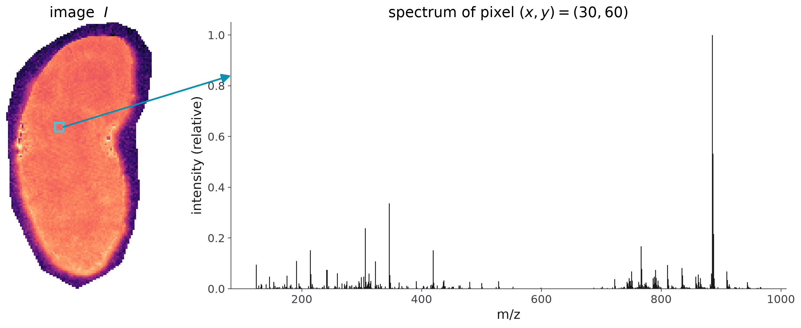
- every pixel of the image carries a whole mass spectrum
- MALDI: the tissue section is scanned pixel by pixel; one spectrum per position
Data: mathematical description
formal
Image \(\quad I \subset \mathbb{N}^{2}\) (or \(\mathbb{N}^{3}\)), pixel \(p = (x, y)\)
Spectrum at \(p\) — peaks \((m, v) \in \mathbb{R}_+ \times \mathbb{R}_+\) \[\mu_p = \sum_k v_k\, \delta_{m_k}\]
Binning of the m/z axis \([100, 3000]\) with step \(0.55\) \[B_i = [\,100 + 0.55(i-1),\ 100 + 0.55\,i\,), \quad i = 1, \dots, M\] \[x_{p,i} = \sum_{m_k \in B_i} v_k, \qquad M = 5273\]
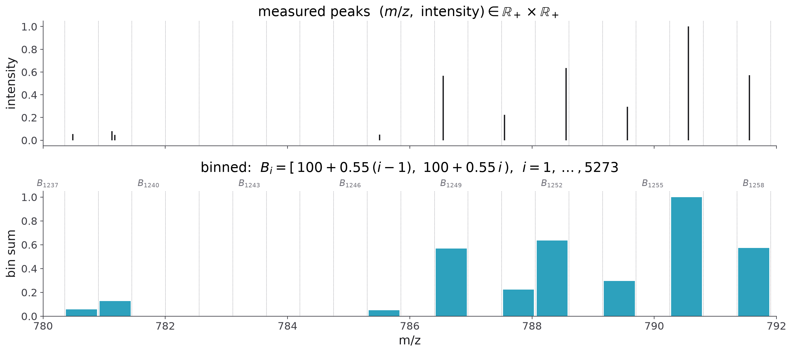
\[\text{data} \;\subset\; I \times \prod_{i=1}^{M} \big(B_i \times \mathbb{R}_+\big) \;\cong\; I \times \mathbb{R}_+^{M}, \qquad x_p \mapsto \frac{x_p}{\lVert x_p \rVert_1} \in \Delta^{M-1} \ \ (\text{TIC})\]
Segmentation: where the word atlas comes from
intuition
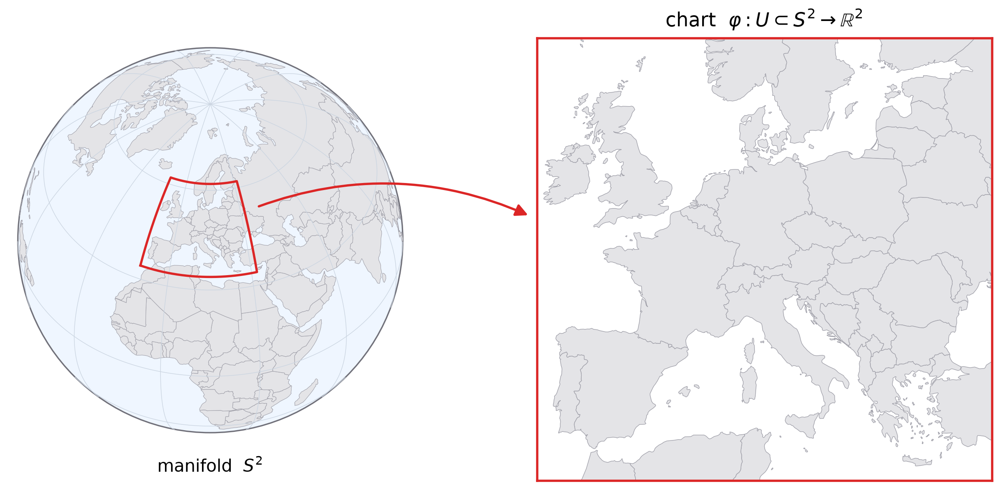
- the globe is known, but we work with charts: approximate, direct representations in \(\mathbb{R}^2\)
- an atlas is a collection of charts \((U_\alpha, \varphi_\alpha)\), \(\ \varphi_\alpha : U_\alpha \to \mathbb{R}^d\)
Segmentation: a trivial practical example
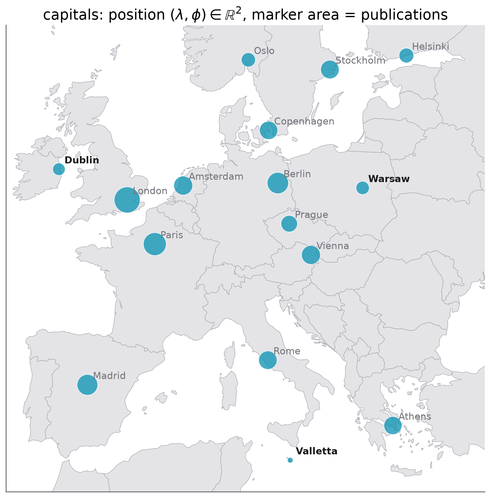
- a capital needs several coordinates (position, name, country, …)
- we ask one question: how active is mass spectrometry there?
- PubMed publications with a capital-city affiliation, normalized over the shown capitals
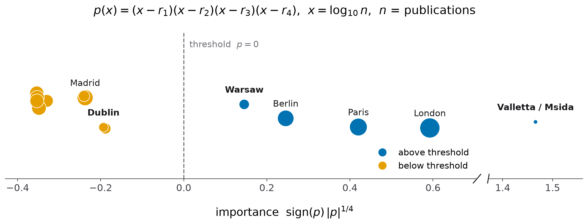
- representation reduced to \(\mathbb{R}\) — two groups appear
PubMed E-utilities, "mass spectrometry"[MeSH Terms] AND "<city>"[Affiliation], retrieved 2026-09-24.
Segmentation: the analysed example
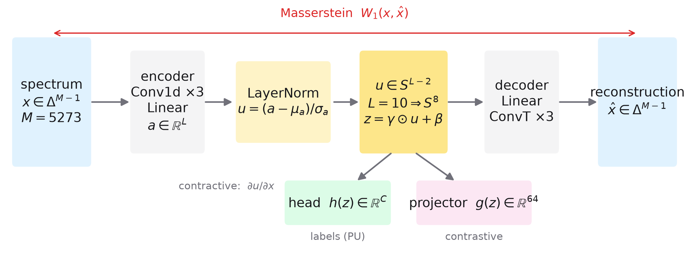
- encoder compresses a spectrum into a latent point \(z\)
- decoder reconstructs the spectrum from \(z\)
- goal: construct \(z\) so that it is stable and meaningful

Segmentation: the atlas, formally
formal
\[\mathrm{Enc}: \Delta^{M-1} \to S^{L-2}(\sqrt{L}) \subset \mathbf{1}^\perp \subset \mathbb{R}^{L}, \qquad \mathrm{Dec}: \mathbb{R}^{L} \to \Delta^{M-1}\]
Bottleneck LayerNorm of \(a = \mathrm{CNN}(x) \in \mathbb{R}^L\) \[u = \frac{a - \mu_a \mathbf{1}}{\sigma_a} \;\Rightarrow\; \mathbf{1}^\top u = 0, \quad \lVert u \rVert^2 = L\] so \(u\) lies on the sphere \(S^{L-2}(\sqrt{L})\) in \(\mathbf{1}^\perp\); \(z = \gamma \odot u + \beta\) is an affine image of it.
\(L = 10 \;\Rightarrow\; u \in S^{8}\)
Heads on the latent
- decoder \(\hat x = \mathrm{Dec}(z)\)
- predictive head \(h(z) \in \mathbb{R}^{C}\) (annotated ions)
- projector \(g(z) \in \mathbb{R}^{64}\) (contrastive)
Data inside the sphere: neighbourhood-based (TwoNN) intrinsic dimension of the latent points \(\approx 5.1\)–\(5.6\)
TwoNN on the canonical latent of the real-data baseline (axis 100–3000 m/z, 5 repetitions); notebook part_1_06_latent_geometry.
Components
The example we will develop
toy model
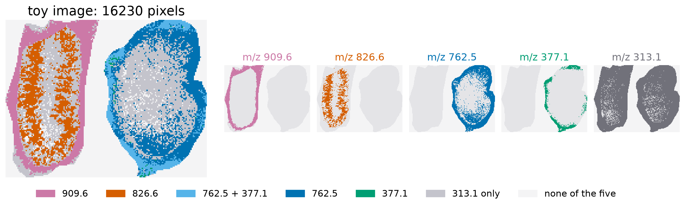
- two kidney sections of one series (METASPACE d28-2017-2, d28-2006-2): 16 230 pixels
- m/z \(200\)–\(950\), step \(0.55\): 1364 bins; 21 annotated ions (7 shared)
- same architecture and optimizer as the real model, 10 epochs
- latent \(L = 3 \Rightarrow u \in S^{1}\) (a circle), \(\;L = 4 \Rightarrow u \in S^{2}\) (a sphere)
- components: Masserstein, predictive head, contrastive, contractive
- loss weights as in the real model: head 0.2, contrastive 0.001, contractive 0.002
The toy latent: reconstruction only — \(S^1\)
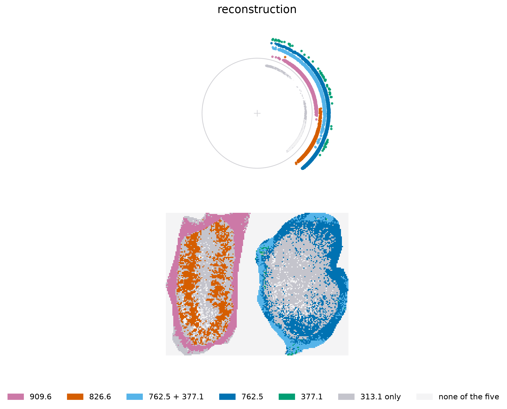
top: every pixel on the circle \(S^1\) (small radial jitter for visibility), colour = region; bottom: the image coloured by the position on the circle
The toy latent: reconstruction only — \(S^2\)
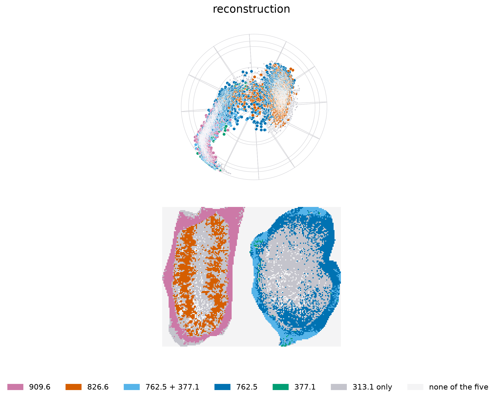
top: every pixel on \(S^2\), colour = region; bottom: the image coloured by the position on the sphere
The toy latent, interactively
Masserstein: comparing spectra
TIC-normalized spectra are probability measures on the m/z axis. We compare them by the Wasserstein distance — the cost of moving intensity along m/z.
In one dimension it is exact and linear-time: \[W_1(x, \hat x) = \int \big| F_x(m) - F_{\hat x}(m) \big|\, dm\] \[= \sum_{i=1}^{M-1} \Big| \sum_{j \le i} (x_j - \hat x_j) \Big| \,(m_{i+1} - m_i)\]
- no transport matrix, no iterative solver: \(O(M)\)
- a shifted peak costs its shift, not a full mismatch
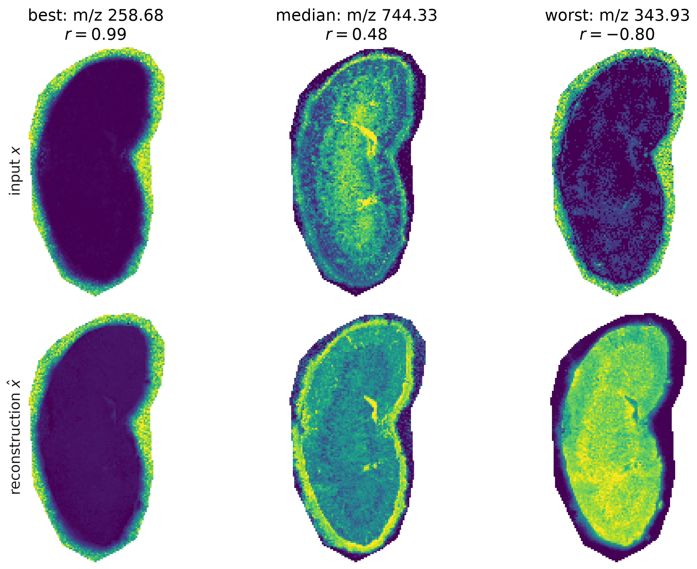
real model, held-out image: best, median and worst reconstructed channelMajewski, Ciach, Startek, Niemyska, Miasojedow, Gambin (2018) WABI, doi:10.4230/LIPIcs.WABI.2018.25 · Ciach et al. (2020) Rapid Commun. Mass Spectrom., doi:10.1002/rcm.8956
Predictive head — \(S^1\)
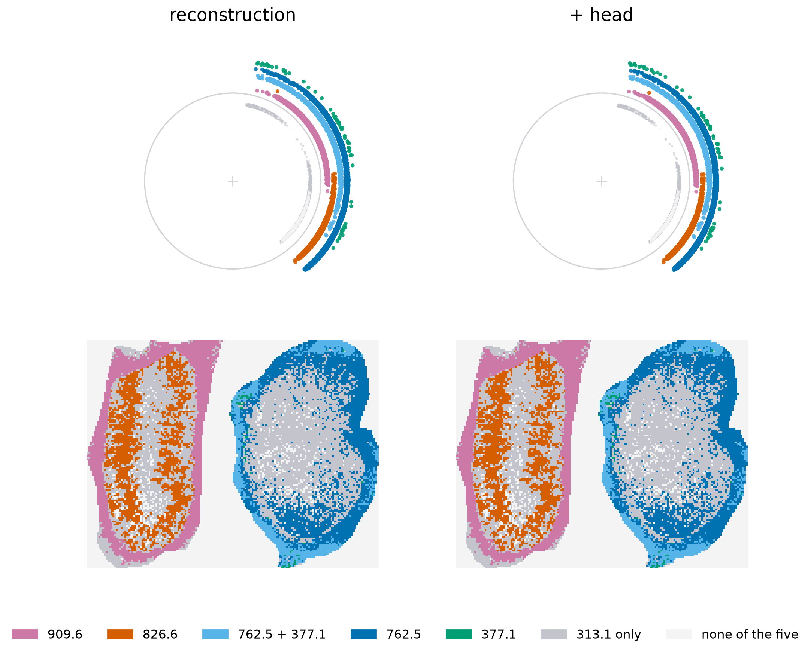
Predictive head — \(S^2\)
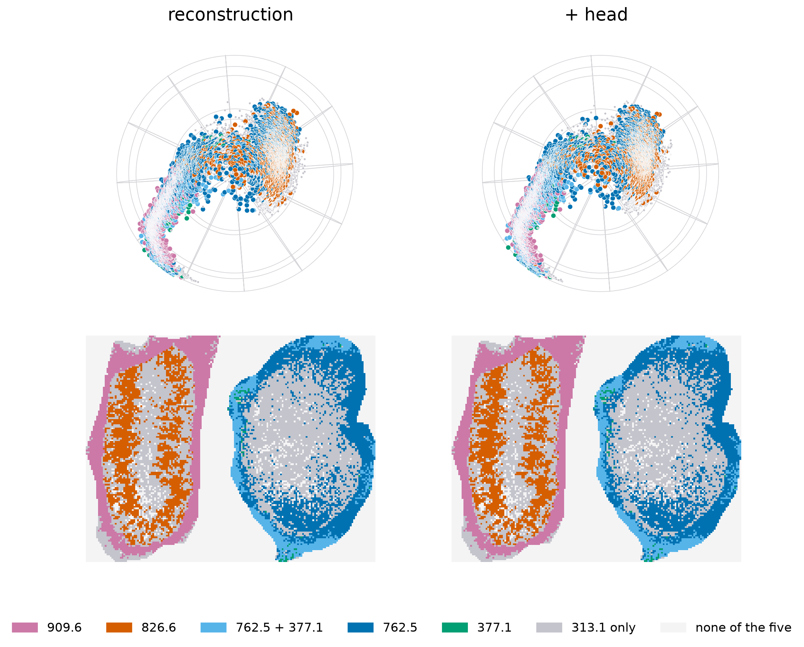
Predictive head: where the ions are
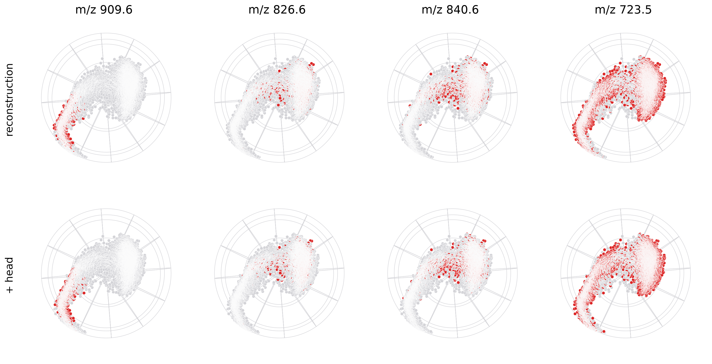
\(\mathcal{L}_{\mathrm{VPU}} = \frac{1}{C}\sum_{c}\Big[\log \tfrac{1}{|P \cup U|}\sum_{i} \sigma(h_c(z_i)) - \tfrac{1}{|P_c|}\sum_{i \in P_c} \log \sigma(h_c(z_i))\Big]\) — positive–unlabelled: an unannotated ion is unknown, not absent
Contrastive learning — \(S^1\)
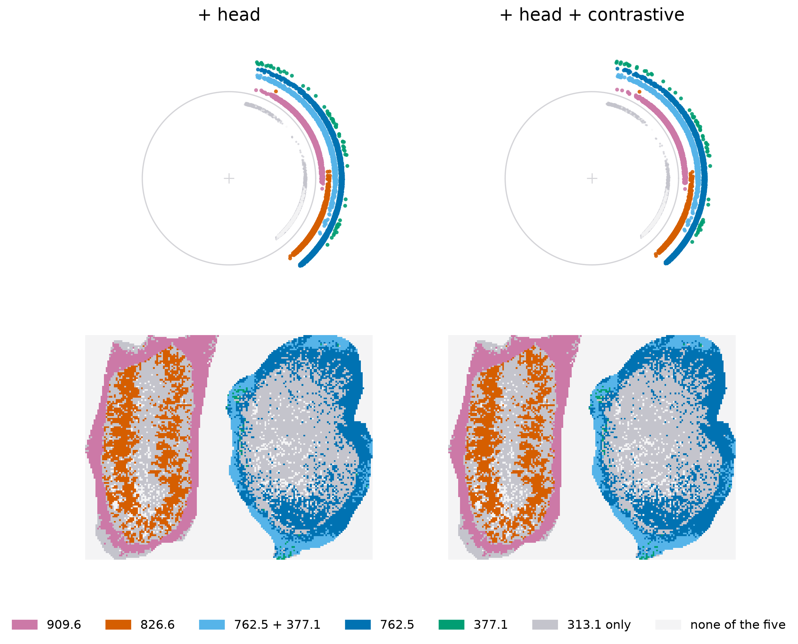
Contrastive learning — \(S^2\)
Contrastive learning: invariance to peak permutations
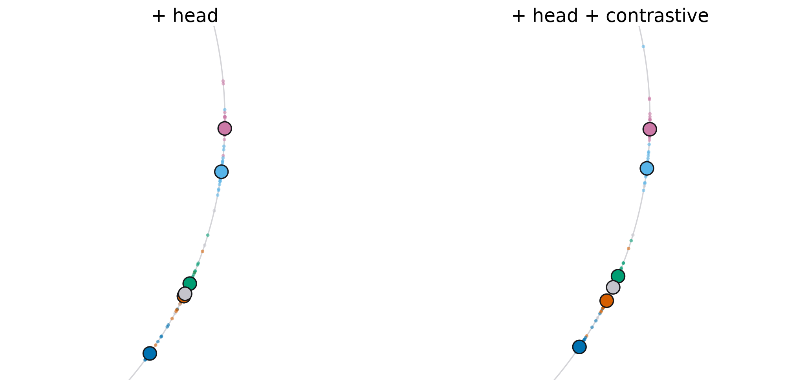
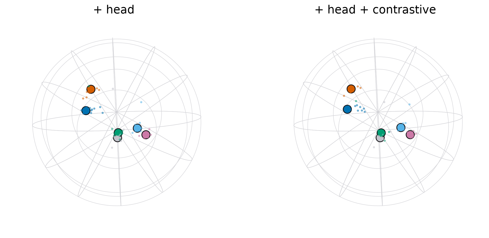
- a view \(\tilde x\) permutes the shapes of three unannotated peak envelopes of \(x\) (TIC preserved)
- large points: pixels; small points: their views — the tighter the cloud, the more invariant the encoder
Contrastive learning: formally
formal
For a batch \(x_1, \dots, x_B\) and views \(\tilde x_i = T(x_i)\), projections \(g_i = g(\mathrm{Enc}(x_i))\), \(g_{B+i} = g(\mathrm{Enc}(\tilde x_i))\):
\[\mathcal{L}_{\mathrm{NCE}} = -\frac{1}{2B}\sum_{i=1}^{2B} \log \frac{\exp\big(\mathrm{sim}(g_i, g_{\pi(i)})/\tau\big)}{\sum_{j \ne i} \exp\big(\mathrm{sim}(g_i, g_j)/\tau\big)}, \qquad \mathrm{sim}(a, b) = \frac{a^\top b}{\lVert a \rVert \lVert b \rVert},\ \ \tau = 0.07\]
- \(\pi(i)\): the other view of the same spectrum (positive pair); every other spectrum is a negative
- numerator pulls the two views together, denominator pushes different spectra apart
- \(T\): cyclic permutation of peak-envelope shapes, only peaks without annotation — the representation may ignore unannotated rearrangements, but not the annotated evidence
- the loss acts on the projection \(g(z)\), the latent \(z\) is shaped only through the gradient
Contractive learning — \(S^1\)
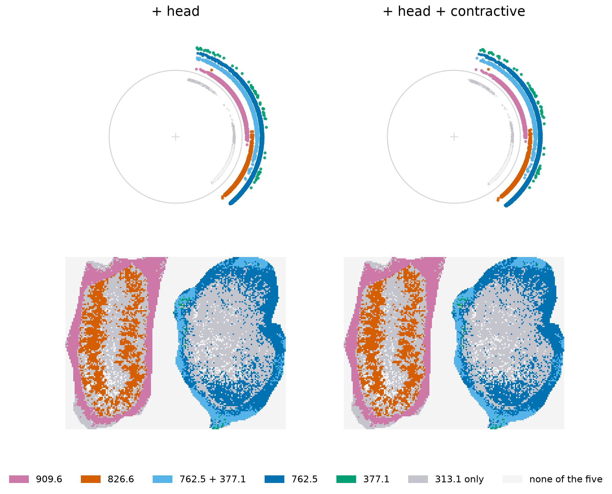
Contractive learning — \(S^2\)
Contractive learning: sensitivity — \(S^1\)
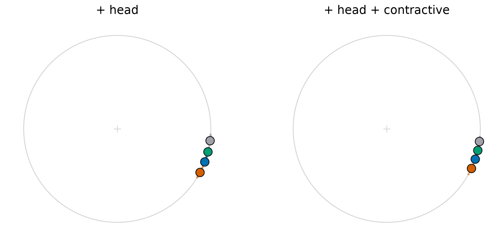
large points = pixels, small points = copies perturbed by \(d_{FR} = 0.6\)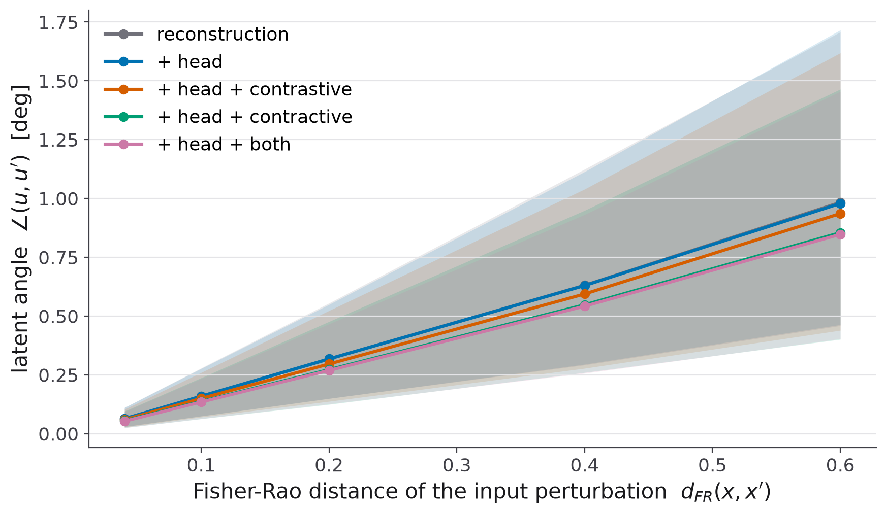
median rotation of the latent point (band: interquartile range) against the size of the input perturbation- every input spectrum is moved by a fixed Fisher–Rao distance in random directions
- the rotation of its latent point measures the local sensitivity — lower = more stable
\(S^1\) toy trained on one section (854 pixels); the other toy figures use two sections.
Contractive learning: sensitivity — \(S^2\)
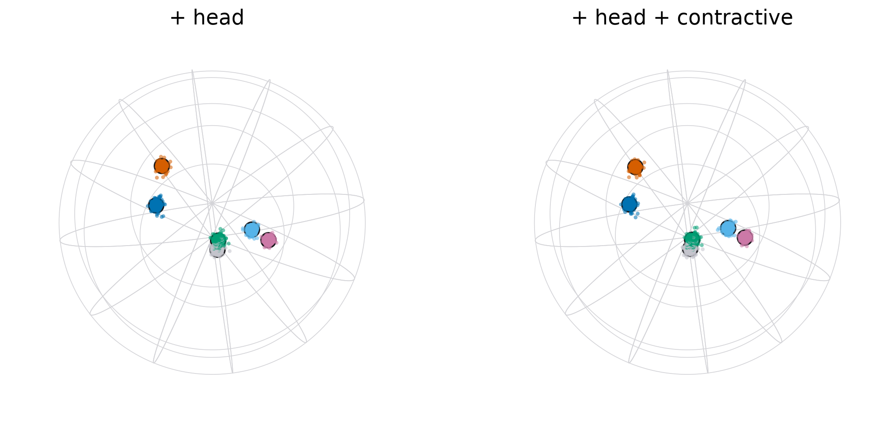
- large points: pixels; small points: copies perturbed by the same Fisher–Rao distance
- the tighter the cloud, the more stable the encoder
Contractive learning: formally
formal
Local sensitivity of the canonical latent: \(J_u(x) = \partial u / \partial x \in \mathbb{R}^{L \times M}\)
With \(z = \gamma \odot u + \beta\): \[J_z = \operatorname{diag}(\gamma)\,\tfrac{1}{\sigma_a}\,P\,A_x, \quad P = I - \tfrac{1}{L}\mathbf{1}\mathbf{1}^\top - \tfrac{1}{L}uu^\top\] \(\lVert J_z \rVert\) can be reduced by shrinking \(\gamma\) without changing the encoder \(\Rightarrow\) we penalize \(J_u\).
Geometry of the input: spectra are points of the simplex; its natural metric is Fisher–Rao, \[\langle v, w \rangle_x = \sum_i \frac{v_i w_i}{x_i}, \qquad d_{FR}(x, x') = 2 \arccos \sum_i \sqrt{x_i x'_i}\]
\[A_x = J_u(x)\,\operatorname{diag}(\sqrt{x})\,\big(I - \sqrt{x}\sqrt{x}^{\top}\big), \qquad \mathcal{L}_{\mathrm{contr}} = \sigma_{\max}(A_x)^2 + \alpha\,\big[\sigma_{\max}(A_x) - \tau\big]_+^2\]
\(\sigma_{\max}\) by power iteration; \(\alpha = 2\), \(\tau = 7\). Rifai et al. (2011) ICML — Frobenius, Euclidean, unnormalized latent.
Both regularizers — \(S^1\)
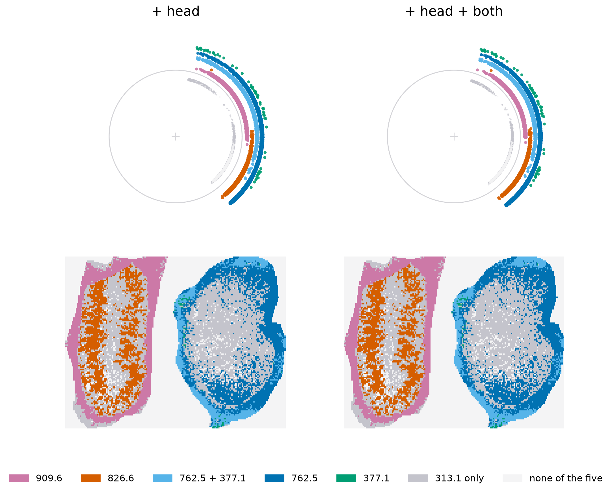
Both regularizers — \(S^2\)
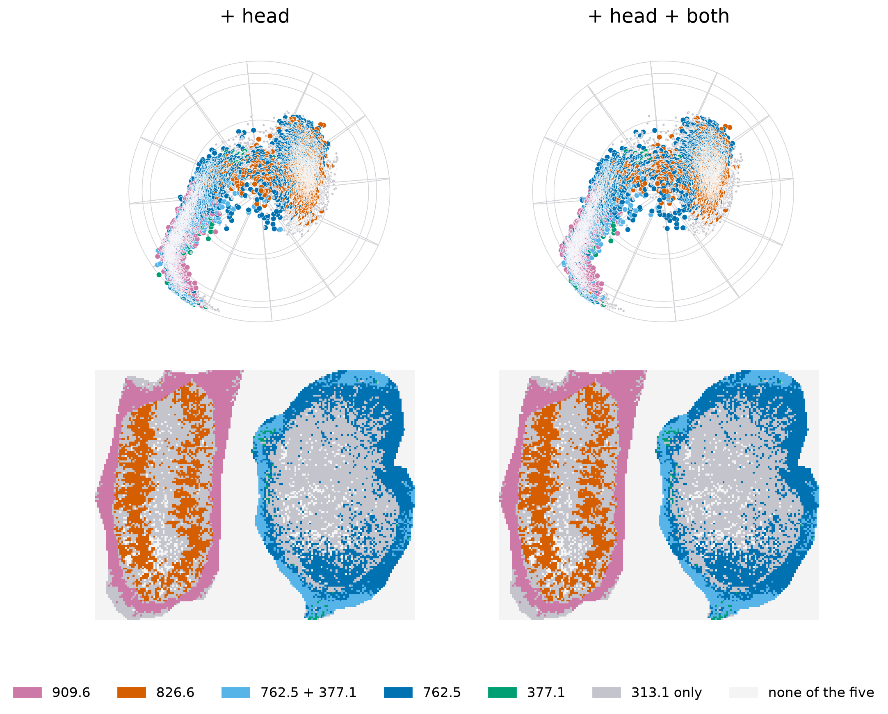
Both regularizers: stability and invariance — \(S^1\)
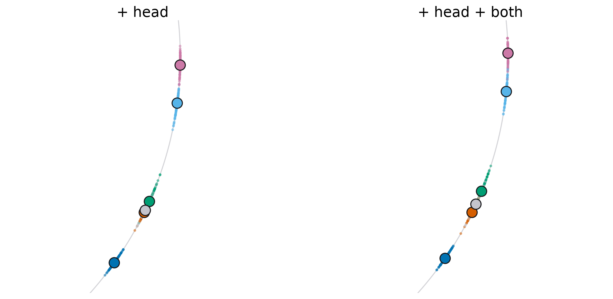
input perturbed by \(d_{FR} = 0.6\) (contractive view)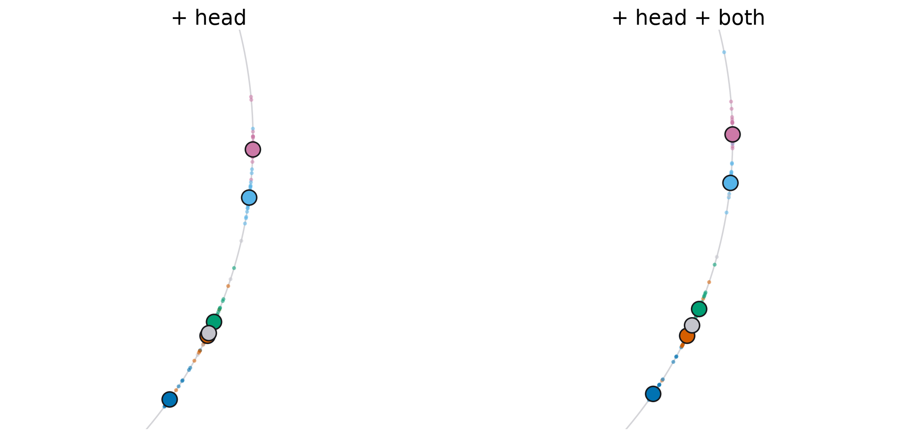
unannotated peaks permuted (contrastive view)- large points: pixels; small points: perturbed copies (left) or permuted views (right)
- the tighter the cloud, the more stable (left) or invariant (right) the encoder
Both regularizers: stability and invariance — \(S^2\)
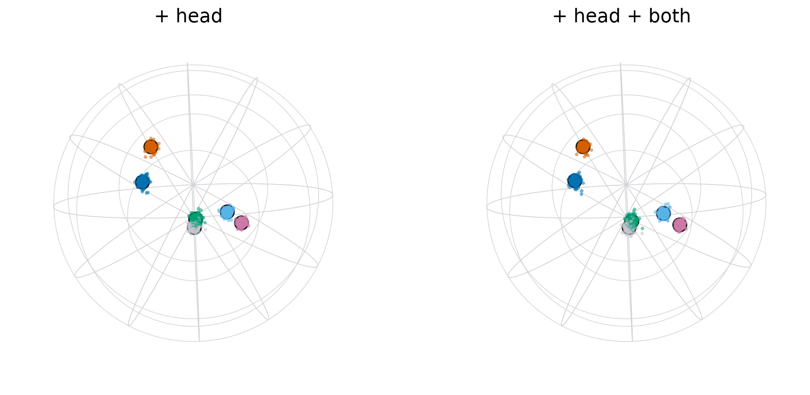
input perturbed by \(d_{FR} = 0.6\) (contractive view)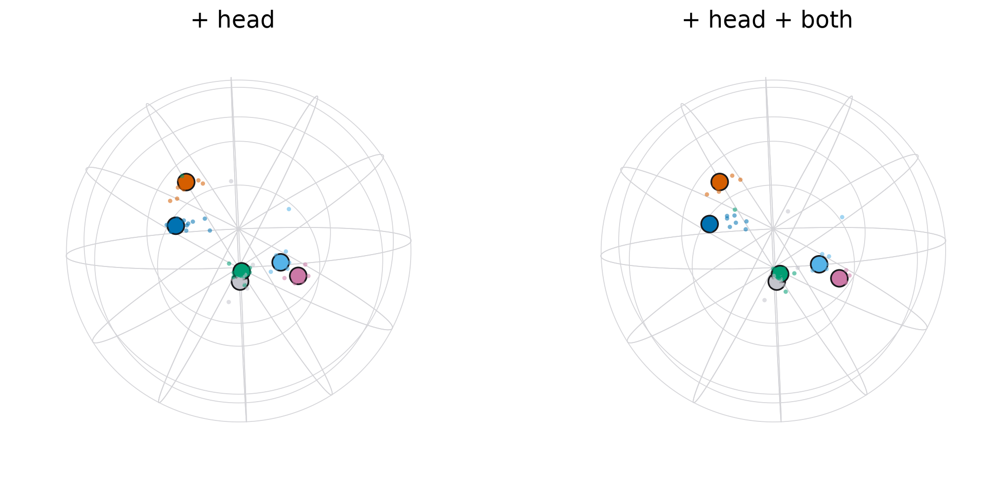
unannotated peaks permuted (contrastive view)- large points: pixels; small points: perturbed copies (left) or permuted views (right)
- the tighter the cloud, the more stable (left) or invariant (right) the encoder
Current state
Current state of the work
- representation model with predictive heads (variational PU) — prepared
- contrastive and contractive regularization — implemented and analysed
- synthetic pretraining — in progress
- next: dataset request and analysis on the benchmark dataset used by msiPL
msiPL: Abdelmoula et al. (2021) Nat. Commun. 12, 5544, doi:10.1038/s41467-021-25744-8
Acknowledgements
- IsoSpec2 — Łącki, Valkenborg, Startek (2020) Anal. Chem., doi:10.1021/acs.analchem.0c00959
- Masserstein and the one-dimensional Wasserstein distance for spectra — Majewski, Ciach, Startek et al. (2018); Ciach et al. (2020)
- the organizers of BioGeMT for the opportunity to take part